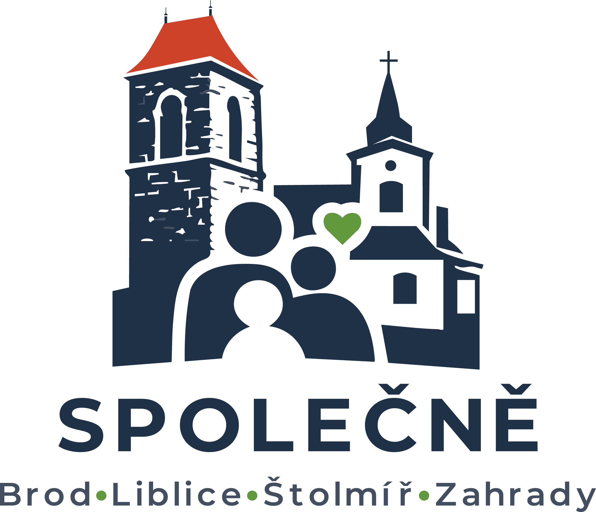
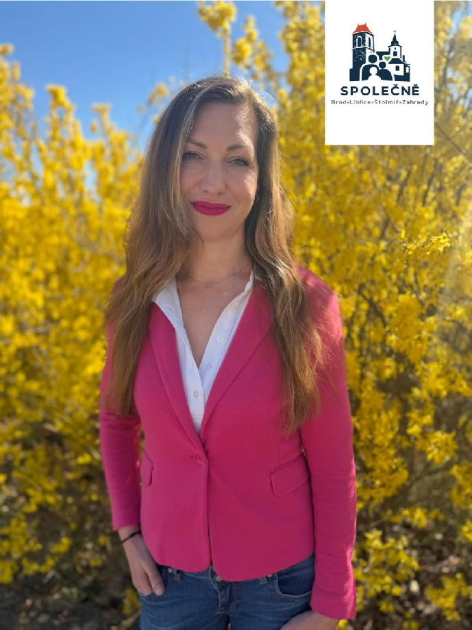
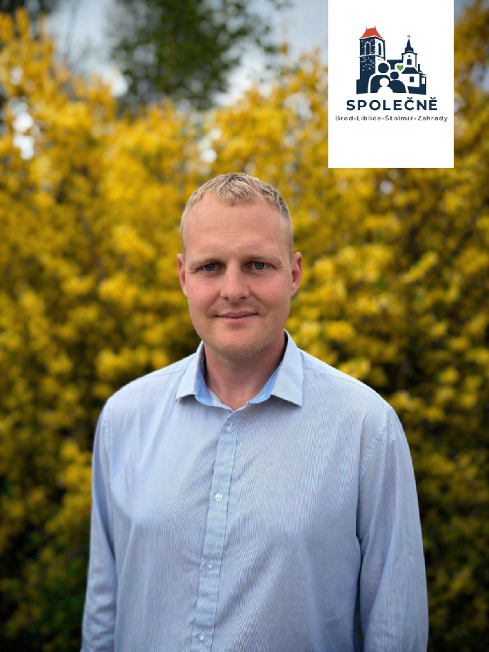
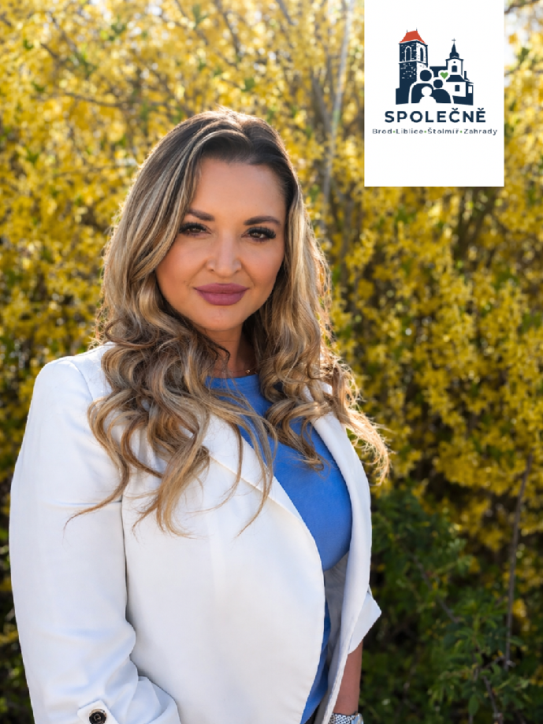
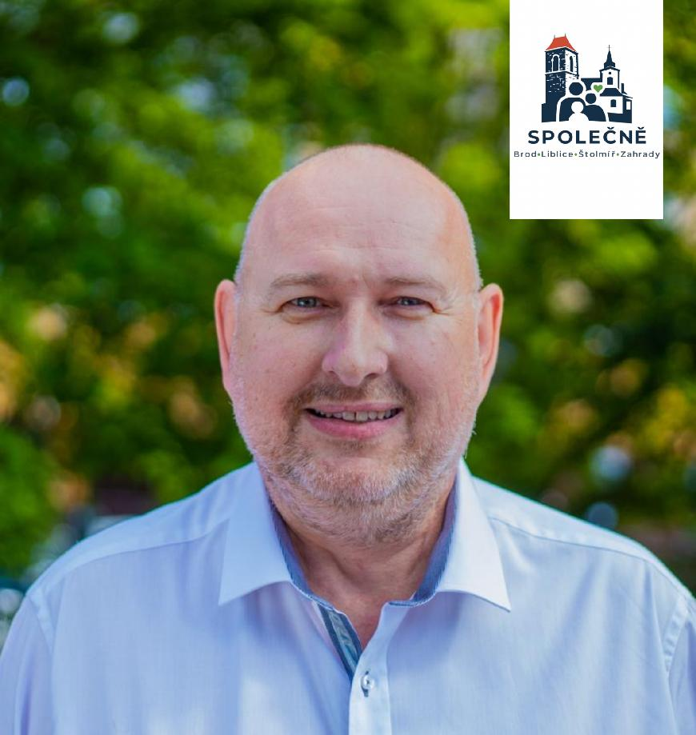
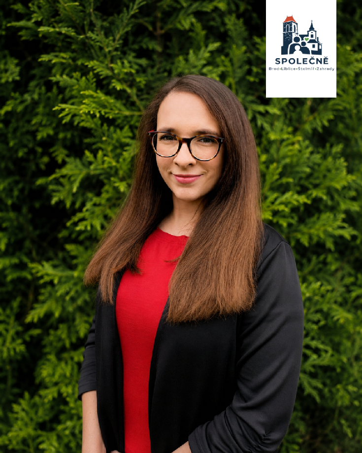
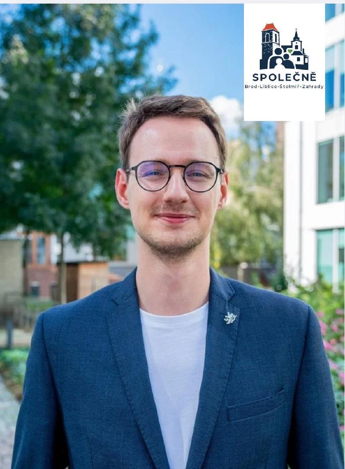

Bezpečné město pro každého
Větší důraz na pořádek, prevenci a spolupráci s městskou policií.

Brod . Liblice . Štolmíř . Zahrady
Jsme nové sdružení nezávislých kandidátů, kteří v Českém Brodě, Liblicích, Štolmíři i Zahradách opravdu žijí. Pracujeme tu, vychováváme děti a záleží nám na tom, jak se naše město rozvíjí.
Kdo jsme
Spojujeme zkušenosti, energii mladých i empatii. Jsme jeden tým pro všechny části našeho města.
Těšíme se na setkání s vámi všemi i společnou práci pro náš domov.
Volby začínají v pátek 9. října 2026 ve 14:00
Čas běží. Společně můžeme dát Brodu, Liblicím, Štolmíři a Zahradám novou energii.
Naše priority pro Český Brod
Větší důraz na pořádek, prevenci a spolupráci s městskou policií.
Kvalitní zázemí pro děti, mladé, rodiny i aktivní seniory.
Bezpečnější a plynulejší doprava pro řidiče, chodce i cyklisty.
Město, které je upravené, funkční a příjemné pro každodenní život.
Čistota, pořádek, lavičky, odpadkové koše a moderní městský mobiliář.
Více možností pro procházky, pohyb i odpočinek ve městě a okolí.
Péče o parky, veřejná prostranství a místa, kde lidé opravdu žijí.
Podpora služeb, které lidé potřebují v každodenním životě.
Smysluplné investice, které budou mít skutečný přínos pro obyvatele.
Moderní technologie, lepší komunikace s občany a město, které drží krok s dobou.
Místo, kde se dobře žije dětem, rodinám, mladým i seniorům.
Společně pro náš domov
Vaši kandidáti

01 / Markéta Havlíčková
Tady jsem vyrůstala, studovala na gymnáziu a dnes tu vychovávám své děti. O to víc mi záleží na tom, jak se v našem městě žije.
Jako architektka a místostarostka se dlouhodobě věnuji projektům i realizaci stavebních záměrů. K práci přistupuji pečlivě, s důrazem na estetiku i detail, protože věřím, že kvalitní, funkční a promyšlená řešení mají velký vliv na každodenní život.
Jsem pracovitá, zodpovědná a nebojím se říci svůj názor, ale zároveň vždy naslouchám ostatním a respektuji jejich potřeby i přání.
Záleží mi na našem městě i jeho obyvatelích. Mám to tady prostě ráda.

02 / Martin Sahula
Dlouhodobě pracuji s dětmi jako vychovatel, trenér a mnoho let jsem spojený s SK Český Brod. Právě díky tomu dobře vnímám, jak důležité je mít ve městě kvalitní sportoviště, možnosti pro volný čas a bezpečné prostředí pro každodenní život.
Od roku 2022 působím jako radní města a předseda komise pro sport a volný čas. Nejsem příznivcem dlouhého řečnění. Mám raději poctivou práci, klidný přístup a věci, za kterými je vidět konkrétní výsledek.
Na Českém Brodě mi záleží a chci pro něj dál dělat maximum.

03 / Michaela Fikejzová
Český Brod je přirozenou součástí mého každodenního života i života naší rodiny. Dlouhodobě se věnuji propagaci SK Český Brod a podporuji aktivity, které propojují lidi a pomáhají místní komunitě.
Jsem také autorkou projektu Pokec na Půlce, kterým přibližuji klub a dění kolem něj širší veřejnosti. Blízký je mi sport, kultura a projekty, které mají pro Český Brod skutečný přínos.
Záleží mi na tom, aby se v našem městě dobře žilo dětem, rodinám i seniorům a aby se Český Brod dál rozvíjel jako místo, kde se lidé cítí dobře, bezpečně a doma.

04 / Libor Žofka
Třicet let jsem působil u Celní správy - začínal jsem jako řadový celník a končil jako vedoucí samostatného oddělení na Generálním ředitelství cel. V současné době působím jako asistent senátora. Díky tomu vím, jak funguje státní správa, jak řídit velké týmy i jak prosadit potřebná zlepšení.
Český Brod a jeho bezpečnost nejsou pro mě jen předvolebním heslem. Jako dlouholetý člen Komise bezpečnosti detailně znám silná i slabá místa našeho města. Mým cílem je systematicky zlepšovat bezpečnost a dopravu, která nás všechny pálí nejvíce.
Na Českém Brodě, Liblicích, Štolmíři i Zahradách mi záleží - je to můj domov. Chci, aby naše město bylo místem, kde se lidé všech generací cítí bezpečně a kde věci zkrátka fungují.

05 / Markéta Staňková
Jsem rodačka z Českého Brodu - města, které je pro mě domovem v tom nejhlubším slova smyslu. V Českém Brodě jsem se narodila, vyrůstala, chodila do školky, školy i na gymnázium. Žije zde celá má rodina a dnes tu vychovávám i své dvě děti.
Pracuji jako učitelka na 1. stupni základní školy. Práce s dětmi je pro mě nejen povoláním, ale především posláním. Vždy jsem se snažila předávat dětem nejen znalosti, ale také radost z objevování a vytvářet pro ně bezpečné a podnětné prostředí.
S objevováním, tvořivostí a prožitkem souvisel také kroužek smyslohraní, který jsem během mateřské dovolené vedla společně s kolegyněmi.
Do všeho, co dělám, vkládám srdce, energii a opravdový zájem o lidi kolem sebe. Právě tyto hodnoty bych ráda přenášela dál.

06 / David Žofka
Je mi 24 let a Český Brod je místem, na kterém mi opravdu záleží. Dlouhodobě se tady snažím přispívat k tomu, aby se nám ve městě žilo lépe, bezpečněji a aktivněji.
Pracoval jsem jako učitel na základní škole, následně jako asistent europoslankyně a dnes působím jako ředitel kabinetu ministra pro sport, prevenci a zdraví. Zároveň organizuji letní dětské tábory.
Od roku 2019 působím v komisi pro místní části a od roku 2022 také v kontrolním výboru města. Společně s kolegy se snažíme posunout vznik bezpečné cesty mezi Českým Brodem a Štolmíří i lepší propojení Českého Brodu a Zahrad.
Záleží mi na sportu, veřejně přístupných sportovištích a spolupráci města se spolky, organizacemi a podnikateli, kteří vytvářejí život v našem městě.
Kandidátka Společně
Kontakt